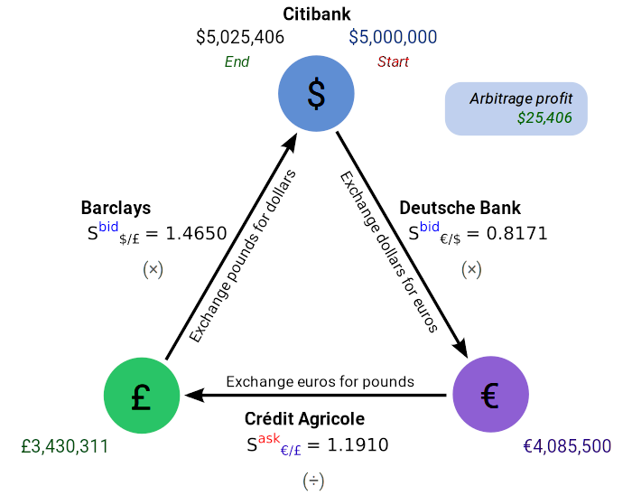
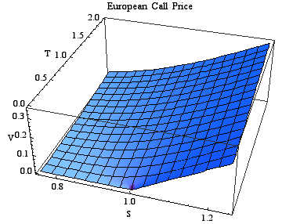
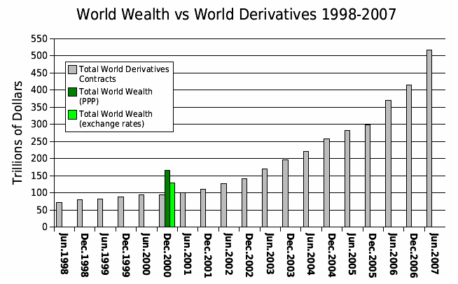
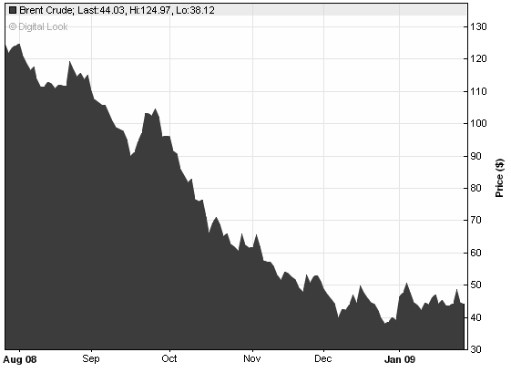

Convertible securities are convertible bonds or preferred stocks that pay regular interest and can be converted into shares of common stock.
Discuss the advantages and disadvantages of convertible bonds
Convertible securities can be bonds or preferred stocks that pay regular interest and can be converted into shares of common stock (sometimes conditioned on the stock price appreciating to a predetermined level).
A convertible bond (CB) is a type of bond that can be converted into shares of common stock in the issuing company or cash of equal value, at an agreed-upon price. It is a hybrid security with debt and equity-like features. Although a CB typically has a coupon rate lower than that of similar, non-convertible debt, the instrument carries additional value through the option to convert the bond to stock, and thereby participate in further growth in the company's equity value. The investor receives the potential upside of conversion into equity while protecting the downside with cash flow from coupon payments and the return of principal upon maturity. Convertible bonds are usually issued offering a higher yield than obtainable on the shares into which the bonds convert. Convertible bond markets in the United States and Japan are of primary global importance because they are the largest in terms of market capitalization.
Convertible bonds have all the features of typical bonds, plus the following additional features:
Convertible preferred stocks are securities that contain a provision by which the holder may convert the preferred into the common stock of the company (or, sometimes, into the common stock of an affiliated company) under certain conditions - among which may be the specification of a future date when conversion may begin, a certain number of common shares per preferred share or a certain price per share for the common stock.
Convertible arbitrage is a market-neutral investment strategy often employed by hedge funds. It involves the simultaneous purchase of convertible securities and the short sale of the same issuer's common stock. The premise of this strategy is that the convertible is sometimes priced inefficiently relative to the underlying stock, for reasons that range from illiquidity to market psychology. In particular, the equity option embedded in the convertible bond may be a source of cheap volatility, which convertible arbitrageurs can then exploit. Under normal market conditions, the arbitrageur expects the combined position to be insensitive to small fluctuations in the price of the underlying stock.
Arbitrage is the simultaneous purchase and sale of an asset in order to profit from a difference in the price. This diagram illustrates an arbitrage opportunity in foreign currency exchange.
From the issuer's perspective, the key benefit of raising money by selling convertible bonds is a reduced cash interest payment. The advantage for companies of issuing CBs is that, if the bonds are converted to stocks, the company's debt vanishes. Additional advantages for issuers include:
Convertible bonds are safer for the investor than preferred or common shares; they provide asset protection, because the value of the convertible bond will only fall to the value of the bond floor. At the same time, CBs can provide the possibility of high equity-like returns. Also, CBs are usually less volatile than regular shares.
A primary disadvantage of convertible bonds is their liquidity risk. In theory, when a stock declines, the associated convertible bond will decline less, because it is protected by its value as a fixed-income instrument. However, CBs can decline in value more than stocks due to their liquidity risk. Moreover, in exchange for the benefit of reduced interest payments, the value of shareholder's equity is reduced due to the stock dilution expected when bondholders convert their bonds into new shares. Convertible securities also bring with them the risk of diluting control of the company and forced conversion, which occurs when the price of the stock is higher than the amount it would be if the bond were redeemed. This feature caps the capital appreciation potential of a convertible bond.
Options give the owner the right, but not the obligation, to buy or sell an underlying asset or instrument.
Discuss the factors that influence the values of different types of options
Options are a type of derivative that give the owner the right, but not the obligation, to buy or sell an underlying asset or instrument at a specified strike price on or before a specified date. The seller incurs a corresponding obligation to fulfill the transaction, that is to sell or buy, if the long holder elects to "exercise" the option prior to expiration. The buyer pays a premium to the seller for this right. An option that conveys the right to buy something at a specific price is referred to as a call; an option that conveys the right to sell something at a specific price is called a put.
The value of an option is commonly deconstructed into two parts. The first of these is the "intrinsic value," which is defined as the difference between the market value of the underlying asset and the strike price of the given option. The second part depends on a set of other factors which, through a multi-variable, non-linear interrelationship, reflect the discounted expected value of that difference at expiration. Today, many options are created in a standardized form and traded through clearinghouses on regulated options exchanges, while other over-the-counter options are written as bilateral, customized contracts between a single buyer and seller - one or both of which may be a dealer or market-maker.
Every financial option is a contract between two counterparties with the terms of the option specified in a term sheet. Option contracts may be quite complicated; however, at minimum, they usually contain the following specifications:
Naming conventions are used to help identify properties common to many different types of options. These include:
Nearly all stock and equity options are American options, while indexes are generally represented by European options.
The value of an option can be estimated using a variety of quantitative techniques based on the concept of risk neutral pricing and using stochastic calculus. In general, standard option valuation models depend on the following factors:
More advanced models can require additional factors, such as an estimate of how volatility changes over time and for various underlying price levels, or the dynamics of stochastic interest rates.
In 1973, Fischer Black and Myron Scholes made a major breakthrough by deriving a differential equation that must be satisfied by the price of any derivative dependent on a non-dividend-paying stock. By employing the technique of constructing a risk neutral portfolio that replicates the returns of holding an option, Black and Scholes produced a closed-form solution for a European option's theoretical price. At the same time, the model generates hedge parameters necessary for effective risk management of option holdings. The application of the model in actual options trading can be clumsy because of the assumptions of continuous (or no) dividend payment, constant volatility, and a constant interest rate. Nevertheless, the Black-Scholes model is still one of the most important methods and foundations for the existing financial market in which the result is within the reasonable range.
A European call valued using the Black-Scholes pricing equation for varying asset price S and time-to-expiry T. In this particular example, the strike price is set to unity, the risk-free rate is 0.04 and the volatility is 0.2.
The Black–Scholes equation is a partial differential equation that describes the price of the option over time. The key idea behind the equation is that one can perfectly hedge the option by buying and selling the underlying asset in just the right way and consequently "eliminate risk. " This hedge, in turn, implies that there is only one right price for the option.
Where: N is the cumulative distribution function of the standard normal distribution; T - t is the time to maturity; S is the spot price of the underlying asset; K is the strike price; r is the risk free rate; and omega is the volatility of returns of the underlying asset.
Where: N is the cumulative distribution function of the standard normal distribution; T - t is the time to maturity; S is the spot price of the underlying asset; K is the strike price; r is the risk free rate; and omega is the volatility of returns of the underlying asset.
A warrant is a security that entitles the holder to buy the underlying stock of the issuing company at a fixed exercise price until the expiration date.
Differentiate warrants from other type of convertibles
A warrant is a security that entitles the holder to buy the underlying stock of the issuing company at a fixed exercise price until the expiration date. Some important characteristics to consider include the following:
Sometimes, the issuer will try to establish a market for the warrant and to register it with a listed exchange. In this case, the price can be obtained from a stockbroker. Often, though, warrants are privately held or not registered, which makes their prices less obvious.
Warrants are very similar to call options. For instance, many warrants confer the same rights as equity options, and warrants often can be traded in secondary markets like options. However, there are several key differences between warrants and equity options:
There are various methods of evaluating warrants, the most popular being the Black-Scholes evaluation model [see section on Options]. However, it is important to have some understanding of the various influences on warrant prices. The market value of a warrant can be divided into two components:
Intrinsic value: This is simply the difference between the exercise (strike) price and the underlying stock price. Warrants are also referred to as in-the-money or out-of-the-money, depending on where the current asset price is in relation to the warrant's exercise price. Thus, for instance, for call warrants, if the stock price is below the strike price, the warrant has no intrinsic value (only time value - to be explained shortly). If the stock price is above the strike, the warrant has intrinsic value and is said to be in-the-money.
Time value: Time value can be considered as the value of the continuing exposure to the movement in the underlying security that the warrant provides. Time value declines as the expiration of the warrant gets closer. This erosion of time value is called time decay. It is not constant, but increases rapidly towards expiration. Time value is affected by time to expiration, volatility, dividends and interest rates.
Traditional warrants are issued in conjunction with a bond (known as a warrant-linked bond), and represent the right to acquire shares in the entity issuing the bond. In other words, the writer of a traditional warrant is also the issuer of the underlying instrument. Warrants are issued in this way to reduce the interest rate that must be offered in order to sell the bond issue. Valuing this type of warrant can be accomplished with the following equation:
Where: P is the price paid for the bond with warrants; C is the coupon payment; T is the maturity of the bond; r is the required rate of return; and F is the face value of the bond.
Warrants are often used as deal sweeteners, in order to entice hesitant investors. However, a warrant only benefits the investor if the company grows. Warrants can also be used for portfolio protection. For example, put warrants allow the owner to protect the value of the owner's portfolio against falls in the market or in particular shares. Because of the dilutive nature of warrants, their issuance can lead to a decrease in stock value and loss of voting control. Warrants may also carry liquidity risk, due to their specialized nature.
A derivative is a financial instrument whose value is based on one or more underlying assets.
Differentiate between different types of derivatives and their uses
A derivative is a financial instrument whose value is based on one or more underlying assets. In practice, it is a contract between two parties that specifies conditions - especially dates, resulting values of the underlying variables, and notional amounts - under which payments are to be made between the parties.
Derivatives are broadly categorized by the relationship between the underlying asset and the derivative, the type of underlying asset, the market in which they trade, and their pay-off profile. The most common types of derivatives are forwards, futures, options, and swaps. The most common underlying assets include commodities, stocks, bonds, interest rates, and currencies.
Derivatives are used by investors for the following:
The use of derivatives can result in large losses because of the use of leverage. Derivatives allow investors to earn large returns from small movements in the underlying asset's price. Conversely, investors could lose large amounts if the price of the underlying moves against them significantly .
This graph illustrates total world wealth versus total notional value in derivatives contracts between 1998 and 2007.
In broad terms, there are two groups of derivative contracts, which are distinguished by the way they are traded in the market.
Over-the-counter (OTC) derivatives are contracts that are traded (and privately negotiated) directly between two parties, without going through an exchange or other intermediary. Products such as swaps, forward rate agreements, exotic options - and other exotic derivatives - are almost always traded in this way. The OTC derivative market is the largest market for derivatives, and is mostly unregulated with respect to disclosure of information between the parties.
Exchange-traded derivative contracts (ETD) are those derivatives instruments that are traded via specialized derivatives exchanges or other exchanges. A derivatives exchange is a market where individuals trade standardized contracts that have been defined by the exchange. It acts as an intermediary to all related transactions, and takes initial margin from both sides of the trade to act as a guarantee.
A forward contract is a non-standardized contract between two parties to buy or sell an asset at a specified future time, at a price agreed upon today. The party agreeing to buy the underlying asset in the future assumes a long position, and the party agreeing to sell the asset in the future assumes a short position. The price agreed upon is called the delivery price, which is equal to the forward price at the time the contract is entered into. The forward price of such a contract is commonly contrasted with the spot price, which is the price at which the asset changes hands on the spot date. The difference between the spot and the forward price is the forward premium or forward discount, generally considered in the form of a profit, or loss, by the purchasing party.
A futures contract differs from a forward contract in that the futures contract is a standardized contract written by a clearing house that operates an exchange where the contract can be bought and sold. On the other hand, the forward contract is a non-standardized contract written by the parties themselves. Forwards also typically have no interim partial settlements - or "true-ups" - in margin requirements like futures, such that the parties do not exchange additional property, securing the party at gain, and the entire unrealized gain or loss builds up while the contract is open.
Swaps are derivatives in which counterparties exchange cash flows of one party's financial instrument for those of the other party's financial instrument. For example, in the case of a swap involving two bonds, the benefits in question can be the periodic interest (or coupon) payments associated with the bonds. Specifically, the two counterparties agree to exchange one stream of cash flows against another stream. The swap agreement defines the dates when the cash flows are to be paid and the way they are calculated. Usually at the time when the contract is initiated at least one of these series of cash flows is determined by a random or uncertain variable such as an interest rate, foreign exchange rate, equity price or commodity price.
Derivatives allow risk related to the price of underlying assets, such as commodities, to be transferred from one party to another.
Discuss how derivatives manage exposure
Companies that produce or depend on the purchase of commodities are exposed to price fluctuations that occur in commodities markets. Examples of such companies include the airline industry, which is constantly exposed to the price of oil, and farming, which is not only exposed to the fluctuation in the price they can sell their goods at, but also the fluctuation in the price of animal feed, fertilizer, pesticides, and other such inputs.
This graph shows the price of crude oil between August 2008 and January 2009. Companies depending on the price of oil for their supply can implement hedging strategies using derivatives to manage this exposure.
Derivatives allow risk related to the price of underlying assets, such as commodities, to be transferred from one party to another. For example, a wheat farmer and a miller could sign a futures contract to exchange a specified amount of cash for a specified amount of wheat in the future. Both parties have reduced a future risk: for the wheat farmer, the uncertainty of the price, and for the miller, the availability of wheat. However, there is still the risk that no wheat will be available because of events unspecified by the contract, such as the weather, or that one party will renege on the contract. Although a third party, called a clearing house, insures a futures contract, not all derivatives are insured against counter-party risk.
Hedging also occurs when an individual or institution buys an asset (such as a commodity, a bond that has coupon payments, a stock that pays dividends, etc.) and sells it using a futures contract. The individual or institution has access to the asset for a specified amount of time and can then sell it in the future at a specified price according to the futures contract. Of course, this allows the individual or institution the benefit of holding the asset, while reducing the risk that the future selling price will deviate unexpectedly from the market's current assessment of the future value of the asset.
Derivatives can serve legitimate business purposes, as well. For example, a corporation borrows a large sum of money at a specific interest rate. The rate of interest on the loan resets every six months. The corporation is concerned that the rate of interest may be much higher in six months. The corporation could buy a forward rate agreement (FRA), which is a contract to pay a fixed rate of interest six months after purchases on a notional amount of money. If the interest rate after six months is above the contract rate, the seller will pay the difference to the corporation, or FRA buyer. If the rate is lower, the corporation will pay the difference to the seller. The purchase of the FRA serves to reduce the uncertainty concerning the rate increase and stabilize earnings.
{kind=link}
{kind=link}
{kind=link}
{kind=link}